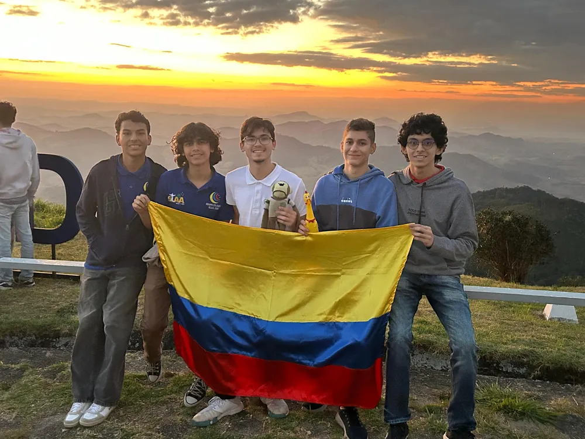
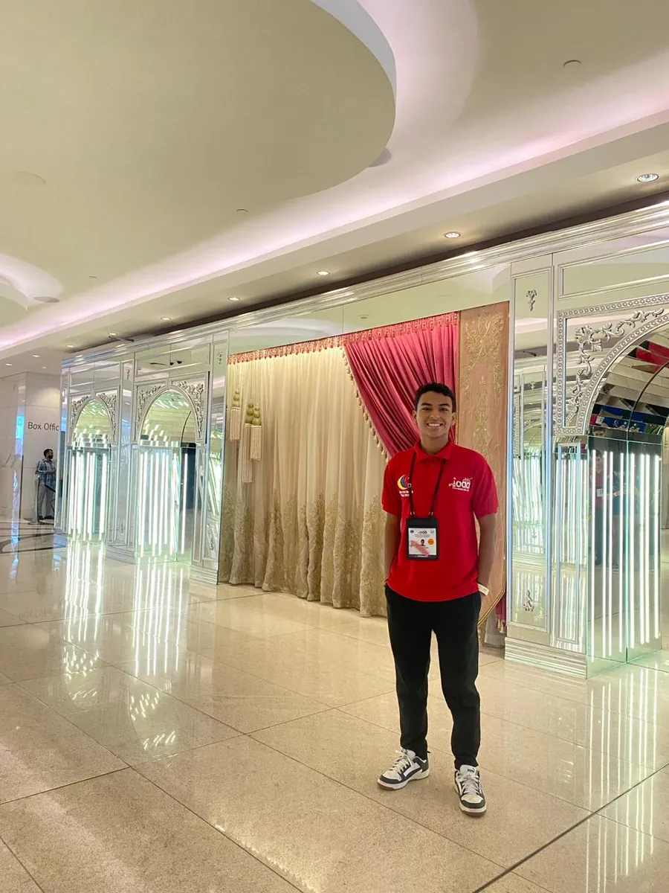
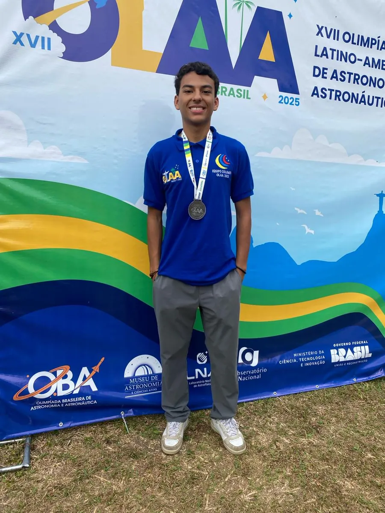
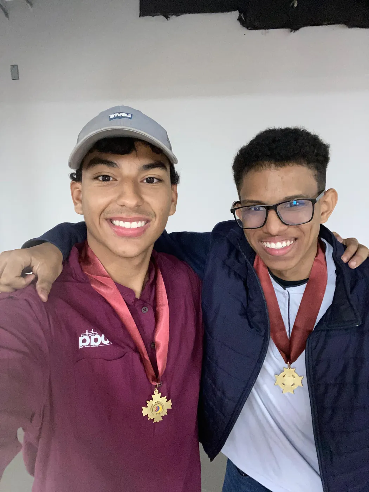

Silver
Latin American Olympiad on Astronomy & Astronautics (OLAA 2025)
10.96° N · 74.80° W — Barranquilla, Colombia
Astronomer & founder.
Silver-medal olympiad astronomer who represented Colombia in Mumbai — now a software engineer at 30X and founder of PadelYa. I bet on instinct over certainty, and bring people with me.
I grew up in Barranquilla and studied at IED Alexander von Humboldt, a public school where dreaming of building or studying abroad can feel out of reach — limited by access, not talent. I discovered science during the pandemic, doing experiments in my backyard, and never really stopped.
Everything since has come from the same instinct: move before you feel ready, build with whatever you have, and pull other people up with you.
“Resources are never a limitation — they’re a motivation to give more of yourself, even when it seems impossible.”

Astronomy is the spine of everything I do. I represented Colombia at the International Olympiad on Astronomy & Astrophysics (IOAA 2025) in Mumbai, and medaled across the region on the way there.
Latin American Olympiad on Astronomy & Astronautics (OLAA 2025)
Colombian Olympiad on Astronomy (OCA 2025)
Represented Colombia · Mumbai, India
Brazilian Astronomy Olympiad training camps


Before any of the medals, I built a refracting telescope by hand — chromatic aberration and all. It taught me the lesson everything else confirmed: you never need the perfect equipment to start looking up. And I was later mentored in biophysics & X-ray crystallography by a Harvard-affiliated research scientist.
Padel is 2-on-2 — you need exactly four people, and beginners rarely have three others ready to play. PadelYa matches you with players at your level and books the court. I started it because I lived the problem: I loved padel but could never fill a game.
Software engineer in the media-tech vertical at 30X, the startup founded by Andrés Bilbao, co-founder of Rappi. I landed it by messaging Andrés on Substack with everything I’d built — no referral, just the work.
1st at the Daydream Hackathon 2025, 2nd at Scrapyard, and I organized the 3rd-largest teen hackathon in the Americas with Hack Club, here in Barranquilla.
At 30X I build PreWave, a content-intelligence system that detects viral content and turns the winners into production-ready briefs. I ship it solo the way a team would — through spec-driven development and agentic engineering: every feature starts as a written spec governed by a living constitution, then AI coding agents implement it against tests that gate the deploy.
Models only score and rank real, scraped content — they never invent metrics or data. Every output traces back to a real input.
Scoring, virality detection and noise filters are framework-free logic. Dependencies point inward only, so the core is trivial to test.
Ingestion dedupes by (id, source) and upserts. Run it twice, get identical state — no duplicate rows, no drift.
Every push to main runs the full suite against a real Postgres. A red test blocks production; green ships to GCP Cloud Run automatically.
9+ numbered specs shipped · a versioned constitution · multi-agent execution plans — instinct sets the direction, the process lets one person ship like a real team.
It started as a kid, mixing whatever I could find with my cousin Juan and wondering why the smells changed. That curiosity turned into two bronze medals at the Colombian Chemistry Olympiad — and into philosophy, where I placed 3rd in the country.
I read the world through transformation. Like Kafka’s caterpillar, I spent years as a pupa among people who were already free — and slowly became myself. If I could only ever teach one class, it would be philosophy: how to be a better human, and how to help others become one too.
“To answer humanity’s greatest enigmas, we must first understand the universe — then unravel the confines of thought.”
Led our astronomy program; took 20+ students to national finals and two all the way to IOAA 2025.
Student comptroller, then representative on the board of directors — chosen by 350+ peers.
Helped shape the academic path of 60+ students from a boarding school.
I run a class teaching students how to apply for scholarships and universities — the playbook I wish I’d had.
Every point is a decision made on instinct. Connect them and they spell a path.
Road trips with my grandfather in his old Renault, crossing mountains toward villages where life moves slower. Waking up in an Embera community on the Pacific coast, learning to fish the way they have for generations. I’ve loved butterflies since I was six — the purest thing I knew for freedom.
I’m happiest learning something I never imagined, sitting with people whose world is different from mine. That’s the lens I bring to science: not just how the universe works, but how people live the knowledge of it.

But I know each act of courage can light the way for someone else. Right now I’m building PadelYa into something anyone, anywhere can use to fall in love with this sport — and still looking up at the same vast, starry sky.